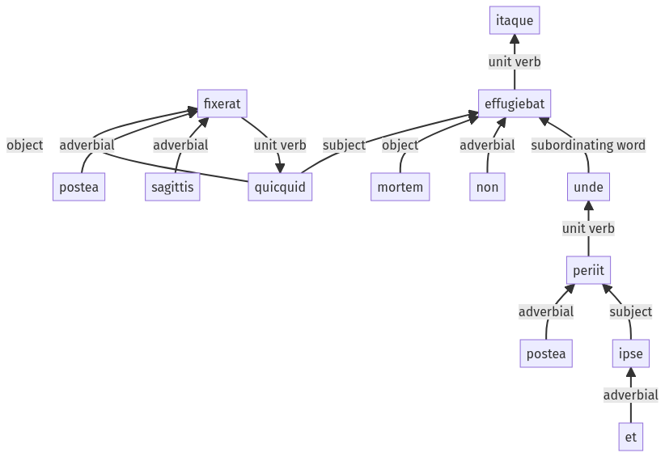

Hyginus, Fabuleer, 30pr.3.46-30pr.3.60a
30pr.3.34-30pr.3.45a | 30pr.4.1-30pr.4.3a
Sentence 418
30pr.3.46-30pr.3.60a
itaque quicquid postea sagittis fixerat, mortem non effugiebat, unde postea et ipse periit in Phrygia.
2 quicquid postea sagittis fixerat
1 mortem non effugiebat
2 unde postea et ipse periit in Phrygia
itaque quicquid postea sagittis fixerat, mortem non effugiebat, unde postea et ipse periit in Phrygia.
Highlighting:
- connecting words
- unit verb
- subject
- object
Color code:
- independent clause (level 1, transitive verb)
- subordinate clause (level 2, transitive verb)
- subordinate clause (level 2, intransitive verb)
